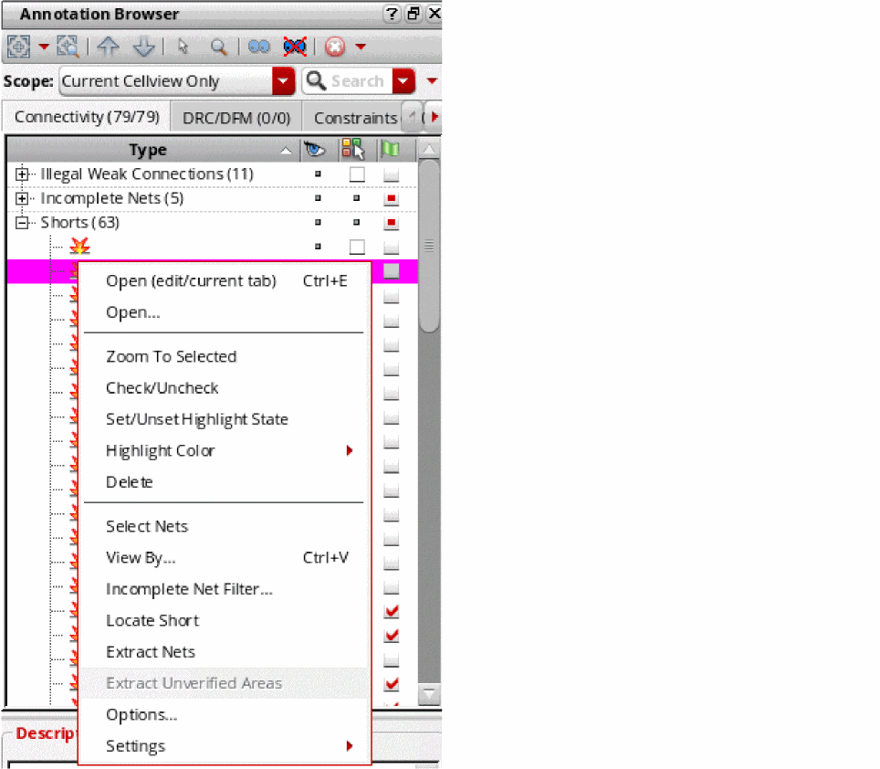
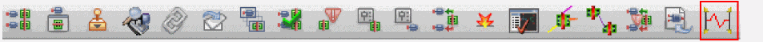

Locating Shorts Using Short Locator
A short is an overlap between two shapes that belong to different nets. To indicate shorts in the design, the Layout XL connectivity extractor creates short markers.
Although the extractor creates markers that indicate that shorts exist and which are the nets involved, the short markers may not indicate where the error is actually located. Manually locating the erroneous shapes can be difficult and time consuming. The Short Locator command can be used to locate the error that is causing a short.
Short Locator finds the pins and labels for the shorted nets and then computes the shortest paths between the shorted nets. The shapes that are common to these shortest paths are called common shapes. In most cases, the shape causing the short is one of the common shapes. But, if there are several errors causing a short, the errors may not be on the common shapes.
Short Locator can be launched from a short reported in the Annotation Browser assistant. Alternatively, it can be launched from the menu or the toolbar.
The Short Locator functionality requires a VLS GXL license, drawing three tokens.
-
In the Annotation Browser, right-click a shorted net pair or a short marker and choose Locate Short.
 -
Click the Short Locator toolbar button.
 -
Choose the Connectivity – Short Locator command.
If a label or shape is selected in the canvas, Short Locator is run on the selected shape. If nothing is selected, the Short Locator form is opened empty. Click the Run button and select a shape.
The Short Locator form displays, indicating the shorted nets between which the short is located, as displayed in the figure below.
You can use the options in the form to choose the color for the different kind of shapes and specify the information to be displayed about the short. You can also use the form to add a virtual label for one of the shorted nets as you progress in the analysis of the short.
Depending on your design situation, the methodology that you use for locating the shapes causing the short can vary.
Related Topics
Locating the Shapes Causing the Short
Locating Short with Large Number of Common Shapes
Return to top